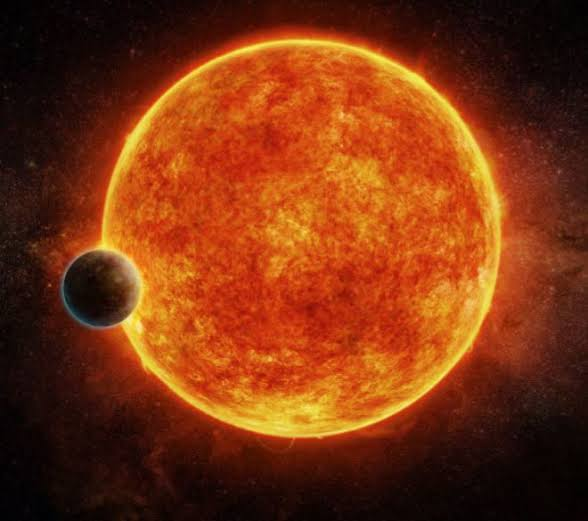
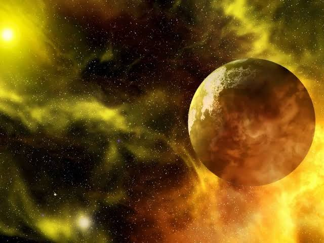

Impacto de la radiación ultravioleta
y otras formas de energía estelar en la
habitabilidad.
¿Podría la radiación de una estrella decidir si existe vida en otro planeta?
Descubre cómo la luz estelar transforma los mundos más allá del Sistema Solar.
Introducción
La radiación estelar en exoplanetas es la energía que reciben estos planetas de las estrellas que orbitan. Esta radiación puede influir en su temperatura, atmósfera y condiciones ambientales, determinando si un planeta podría ser habitable.
Vale la pena entenderla porque la radiación estelar influye en la temperatura y la atmósfera de los exoplanetas. Estudiarla nos ayuda a identificar cuáles podrían tener condiciones adecuadas para la vida.
En este sitio, el visitante encontrará información sobre la radiación estelar, sus efectos en los exoplanetas y su relación con la posibilidad de encontrar vida fuera de nuestro Sistema Solar.
Objetivos
Objetivo general
Analizar cómo la radiación estelar afecta a los exoplanetas y sus condiciones de habitabilidad.
.
Objetivos específicos
Describir qué es la radiación estelar y cómo llega a los exoplanetas.
Explicar cómo la radiación afecta las condiciones de los exoplanetas.
Relacionar el sitio con el experimento del stand.
Marco teórico
1. Primer concepto
La radiación ultravioleta y otras formas de energía estelar pueden afectar la atmósfera, la temperatura y las condiciones de los exoplanetas. Una cantidad excesiva puede dañar su atmósfera, mientras que una cantidad adecuada puede favorecer condiciones necesarias para la vida.

Figura 1. Representa una estrella emitiendo radiación hacia un exoplaneta.
2. Segundo concepto
Primero, la estrella emite diferentes tipos de radiación, como luz ultravioleta, rayos X y luz visible. Luego, esta energía llega al exoplaneta e interactúa con su atmósfera y superficie. Finalmente, dependiendo de la cantidad de radiación recibida, puede aumentar la temperatura, alterar la atmósfera y afectar sus posibilidades de ser habitable.
CIFRA
La cifra de 100 a 400 nanómetros indica el rango de longitudes de onda que corresponde a la radiación ultravioleta.
3. Datos y cifras
La radiación ultravioleta (UV) tiene longitudes de onda entre 100 y 400 nanómetros.
Los rayos X tienen longitudes de onda menores a 10 nanómetros y poseen mucha energía.
La cantidad de radiación que recibe un exoplaneta depende principalmente de la distancia y el tipo de estrella.
Una radiación excesiva puede dañar o eliminar parte de la atmósfera, dificultando la habitabilidad.

Figura 2.Representa un exoplaneta recibiendo energía y radiación de su estrella
Nuestro stand durante la presentación del proyecto final
El visitante encuentra información sobre la radiación estelar, sus efectos en los exoplanetas y su relación con la habitabilidad. También puede observar imágenes, ejemplos y elementos visuales que ayudan a comprender el tema
El experimento físico muestra
El sitio web muestra
Los efectos de la radiación estelar sobre los exoplanetas.
Información sobre la radiación estelar y sus efectos en los exoplanetas.
La relación entre la radiación estelar y la habitabilidad.
Imágenes, ejemplos y elementos visuales que ayudan a comprender el tema.